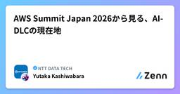
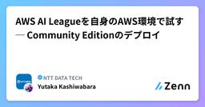
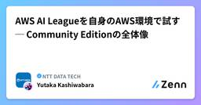
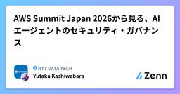
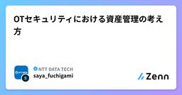

NTT DATA TECHのフィード
https://zenn.dev/p/nttdata_tech
NTT DATA公式アカウントです。 技術を愛するNTT DATAの技術者が、気軽に楽しく発信していきます。 当社のサービスなどについてのお問い合わせは、 お問い合わせフォーム https://nttdata.com/jp/ja/contact-us/ へお願いします。
フィード

AWS Summit Japan 2026から見る、AI-DLCの現在地
NTT DATA TECHのフィード
1. はじめに生成AIやAIエージェントの活用が広がる中で、ソフトウェア開発の現場でもAI活用が進んでいます。これまでは、コーディング支援、テストコード生成、ドキュメント作成、コードレビュー補助など、開発工程の一部にAIを使うケースが多かったと思います。一方で、AWS Summit Japan 2026の各セッションを見ても、最近は「AIでコードを書く」だけでなく、要件定義、設計、実装、テスト、デプロイ、運用まで含めて、開発ライフサイクル全体をAI前提で見直す流れとなっています。その文脈で重要になるのが、AI-DLC（AI-Driven Development Lifecyc...
6時間前

AWS AI Leagueを自身のAWS環境で試す ─ Community Editionのデプロイ
NTT DATA TECHのフィード
1. はじめに前回の記事では、AWS AI League Community Editionの全体像と、利用できる主な機能を紹介しました。https://zenn.dev/nttdata_tech/articles/402acac4a19180今回は、Amazon EC2をデプロイ端末として利用し、Community Editionを自身のAWSアカウントへ構築します。本記事のゴールは、AWS CDKによるデプロイを完了し、ブラウザからCommunity Editionへログインできることを確認するところまでです。実際のAgentic AIやファインチューニングの操作は、次...
6時間前

AWS AI Leagueを自身のAWS環境で試す ─ Community Editionの全体像
NTT DATA TECHのフィード
1. はじめに以前、以下の記事でAWS AI Leagueについて紹介しました。https://zenn.dev/nttdata_tech/articles/a907eb00cbbe4bAWS AI Leagueは、競技形式で生成AIの技術を学ぶプログラムです。主に、次の2つのテーマが用意されています。Amazon SageMaker AIを利用したモデルのファインチューニングAmazon Bedrock AgentCoreを利用したAgentic AIAgentic AIチャレンジでは、AIエージェントがマップ上を移動し、コインの取得や質問への回答などを行いながら、...
1日前

AWS Summit Japan 2026から見る、Amazon Bedrock AgentCoreの現在地
NTT DATA TECHのフィード
1. はじめに生成AIやAIエージェントを業務で活用する動きが広がる中で、最近は「AIエージェントをどう作るか」だけでなく、AIエージェントをどう本番運用するかが重要なテーマになってきています。PoCでは、LLMにツールを呼び出させたり、RAGと組み合わせたりすることで、比較的短期間で動くものを作ることができます。一方で、本番利用を考えると、次のような課題が出てきます。エージェントをどこで安全に実行するのかユーザーやエージェントの認証・認可をどう扱うのか外部SaaSや社内APIへのアクセス権限をどう制御するのかデータ、ナレッジ、ツール、業務ルールをAIが理解・活用しや...
1日前

AWS Summit Japan 2026から見る、AIエージェントのセキュリティ・ガバナンス 1
1
NTT DATA TECHのフィード
1. はじめに生成AIやAIエージェントの活用が広がる中で、最近は「AIエージェントをどう作るか」だけでなく、AIエージェントをどう安全に業務へ組み込むかが重要なテーマになってきています。従来の生成AIセキュリティでは、プロンプトインジェクション、ハルシネーション、不適切な出力、機密情報の漏えいといった、モデルの入出力に関する論点が中心でした。しかし、AIエージェントでは状況が少し変わります。AIエージェントは、単に回答を生成するだけではありません。外部APIを呼び出し、SaaSにアクセスし、データベースを検索し、チケットを作成し、場合によっては業務システムに対して操作を行い...
1日前
Claude Codeの利用量・コスト・コミットをCloudWatch Coding Agent Insightsで可視化
NTT DATA TECHのフィード
1. はじめにAIコーディングエージェントを組織で利用する場合、単に利用環境を提供するだけでなく、次のような情報も把握したくなります。どのモデルが、どの程度利用されているかトークンやコストがどれくらい発生しているかユーザーや部門ごとの利用状況に偏りがないかコード編集やGitコミットなどの開発作業につながっているか2026年7月20日、AWS（Amazon Web Services）がAmazon CloudWatchにCoding Agent Insightsを追加したことを発表しました。https://aws.amazon.com/jp/about-aws/wha...
3日前

DASH 2026 @New York 参加レポート
NTT DATA TECHのフィード
はじめに2026年6月8日〜10日、ニューヨークのJavits Centerで開催された「DASH 2026」に参加してきました。1日目はPartner企業向けのPartner Summitに参加し、Datadogをお客様の環境にどう導入し、活用してもらうかといった話を中心に聞くことができました。メインとなる後半2日間では、Keynoteや各種セッション、展示ブースを回りました。今年のDASHでは、「AI for Datadog」と「Datadog for AI」の2つが大きなテーマになっていました。この記事では、現地で感じたこと、印象に残ったセッション、そして自分なりに持ち...
3日前

AIコーディングエージェントCLIを実測で比較する：agent-cost-benchをAWS上で試す(cli-compare)
NTT DATA TECHのフィード
1. はじめに前回の記事では、AWS（Amazon Web Services） Samplesで公開されている sample-agent-cost-bench を使い、Kiro CLI上で複数モデルを比較しました。https://zenn.dev/nttdata_tech/articles/130bd43f48e425前回利用したのは model-compare です。これは、同じCLI上で複数のモデルを比較し、成功率・コスト・実行時間を確認するためのモードです。今回はその続きとして、agent-cost-bench のもう1つの比較モードである cli-compare を試...
3日前

OTセキュリティにおける資産管理の考え方
NTT DATA TECHのフィード
はじめに（本記事の趣旨）近年、製造業や重要インフラにおいて、OT（Operational Technology）システムのサイバーセキュリティ対策が求められています。その中で、「何から始めるべきか」という問いに対して、最初のステップとして「資産の可視化」が挙げられることが多くあります。しかし、「資産の可視化」と言っても、具体的に何をどこまで実施すればよいのかは必ずしも明確ではありません。OTセキュリティにおける資産管理とは何を指し、どのように整理していくべきかを考えることが重要です。本記事では、OTセキュリティにおける資産管理を検討する上で参考となるガイダンスのひとつとして、...
8日前

AIコーディングエージェント選定を“感覚”から“数字”へ：agent-cost-benchをAWS上で試す
NTT DATA TECHのフィード
1. はじめにAIコーディングエージェントの活用が広がる中で、開発現場では次のような問いが増えてきました。Kiro、Claude Code、GitHub Copilot、Codexなど、どのツールを選ぶべきか同じツールでも、どのモデルを使うべきか高性能なモデルを使うコストは、品質向上に見合っているのかチームや案件全体に展開したとき、費用対効果をどのように説明するのかAIコーディングエージェントは、単純に「一番賢いモデルを使えばよい」というものではありません。簡単な修正であれば軽量なモデルで十分な場合もあります。一方で、既存コードベースをまたぐ修正や、IaCの変更など...
8日前
【DataRobot】解説！AIアクセラレーター ～DataRobot×Papermill×MLflowの連携編～
NTT DATA TECHのフィード
はじめにこんにちは。NTTデータでデータサイエンティストを務めております@tamurayuc20ndです。本記事では、DataRobot社が提供するAIアクセラレータの一つである「MLflowエクスペリメントの追跡」を題材に、PapermillによるNotebookの自動実行と、MLflowによる実験管理の仕組みを解説します。単にテンプレートを動かすだけではなく、自分のユースケースに合わせてどこを修正すればよいかという観点で整理している点が本記事の主眼です。Notebookベースで機械学習の試行錯誤を進めている方や、実験条件と結果を後から振り返りやすくしたい方の参考になれば幸...
9日前
Web Search on Amazon Bedrock AgentCore：外部送信なしでAIエージェントに最新Web情報を持たせる
NTT DATA TECHのフィード
1. はじめに生成AIやAIエージェントを業務で活用する際、モデルの学習時点以降の情報を扱いたいケースがあります。たとえば、最新のAWS（Amazon Web Services）アップデート、製品ドキュメントの更新、ニュース、競合サービスの情報などを扱いたい場合、モデルの内部知識だけでは不十分です。一方で、金融・公共などデータガバナンスが厳しい領域では、AIエージェントにWeb検索機能を持たせる際に、以下のような点が課題になります。ユーザーのプロンプトや検索クエリが外部の検索APIに送信されないか外部検索APIのAPIキーや認証情報をどう管理するかWeb検索機能のために...
9日前
AWS マルチアカウントのセキュリティ統制、どう実装するのが正解か
NTT DATA TECHのフィード
NTTデータの奥村です。AWS（Amazon Web Services）のマルチアカウント環境でセキュリティ統制を設計するとき、私がいつも頭を悩ませるテーマがあります。どこまで Control Tower の Control Catalog を使い、どこから各サービス側の管理機能に任せるべきなのか、というものです。今回はこのテーマについて現時点での私の見解を紹介したいと思います。 登場する管理主体話を始める前に、今回出てくる管理主体、つまりコントロールを実際に管理する仕組みやサービスを説明します。1 つ目が、AWS Control Tower と AWS Control Cata...
9日前
SQLを書かずに業務データを分析する：Oracle Alloy × Select AIで自然言語データ分析アプリを作ってみた
NTT DATA TECHのフィード
はじめに「50万円以上の申請はいくつありますか？」「承認済みの購買申請を一覧表示してください」「今月申請されたデータを確認したい」このような業務データの確認を、毎回SQLで行うのは手間がかかります。特に、SQLに慣れていない利用者にとって、データベースに蓄積された情報を自由に活用することは簡単ではありません。本記事では、Oracle Alloy環境上のAutonomous DatabaseとSelect AIを利用し、業務テーブルに対して自然言語で問い合わせできるデータ分析アプリケーションを試作します。（もちろんOCI上でも動作します）アプリケーションはPythonのWe...
9日前
Claude Cowork / Claude Code を Amazon Bedrock 経由で活用する理由
NTT DATA TECHのフィード
1. はじめにClaude Cowork や Claude Code は、調査、ファイル操作、データ分析、資料作成、コーディング、テスト、レビューといった作業を Claude に委任できる AI エージェント体験を提供します。一方で、企業で利用する場合に重要なのは「何ができるか」だけではありません。プロンプト、ソースコード、生成物、監査ログ、コストなどをどう管理するかが重要になります。本記事では、Claude Cowork や Claude Code を Amazon Bedrock 経由で利用する理由を、AWS（Amazon Web Services）のセキュリティ、認証、監...
10日前
生成AIのコスト急増を防ぐには？AWS上にLLM Gatewayを構成して“使う前に止める”
NTT DATA TECHのフィード
1. はじめに生成AIの業務利用が広がる中で、最近は「AIをどう活用するか」だけでなく、AI利用にかかるコストをどう管理するかも重要なテーマになってきています。たとえば、以下のようなケースです。気づかないうちにLLMのトークン利用料が増えている個人・チーム・アプリごとの利用量が見えづらい高額なモデルを誰でも自由に使えてしまう予算上限を超えてから初めて気づく特定のLLMプロバイダーやモデルが混雑・制限されたときに代替手段がない自分も当初、AWS（Amazon Web Services）であれば以下のような仕組みで、ある程度対応できるのではないかと考えていました。...
10日前
AWSハンズオンがもっと手軽に！AWS Builder Centerの無料サンドボックスを試してみる
NTT DATA TECHのフィード
1. はじめにAWS（Amazon Web Services） のハンズオンを試す際、これまでは個人の AWS アカウントを用意し、クレジットカードを登録し、利用後にリソースを削除する必要がありました。もちろん、実務で AWS を扱ううえでは、アカウント管理や課金管理、IAM 権限、リソース削除の考え方を理解することは重要です。一方で、AWS を学び始めたばかりの方や、社内勉強会・顧客向けワークショップで複数人に環境を触ってもらう場合、事前準備や削除漏れへの不安がハードルになることもあります。そのような中、AWS Builder Center の一部ワークショップで、無料のサン...
10日前
データで顧客行動を解き明かす分析手法のご紹介
NTT DATA TECHのフィード
はじめにこんにちは。社内でデータサイエンティストを務めております@tomoberです。NTTデータ ソリューション事業本部では、お客様企業のAI・データ活用を、コンサルティングから基盤構築、実行支援を通じた成果創出までワンストップで提供しており、その支援テクノロジーの一つとしてDataRobotを提供しております。今回は、2026年1月に開催したデータで読み解く顧客行動セミナーでご紹介させていただいた内容を元に、なぜ顧客理解が必要かといった基本的な概念や、代表的な手法とその考え方を中心にご紹介します。 DataRobotについてDataRobot社は、人工知能（AI）に対...
11日前
【イベント参加レポート】Code with Claude に参加して、AIエージェントの最前線に触れてきた
NTT DATA TECHのフィード
はじめにこんにちは、株式会社NTTデータの松本です。2026年6月10日に東京で開催されたCode with Claudeに参加してきました。本記事では、当日の様子と印象に残ったセッションの要点を紹介します。https://claude.com/code-with-claude/tokyo!本記事の内容は、筆者が当日聴講した際のメモをもとにしています。書き起こしではないため、表現や厳密な数値などは公式の発表内容と異なる場合があります。正確な情報は公式サイトや、後日公開される予定のセッション録画をご確認ください。 基本情報Code with Claudeは、An...
14日前
DatabricksのGenieがリニューアル！何ができるのかまとめてみた
NTT DATA TECHのフィード
はじめにこんにちは、NTTデータグループAI技術部の太田です。先日サンフランシスコで開催されたDatabricksのイベント「Data + AI Summit 2026」に現地参加してきました。本カンファレンスでの注目トピックの一つとして「Genie」が大きく進化しました。これまでGenieというと「自然言語でデータに質問できるAI/BIアシスタント」という印象が強かったと思います。今回の発表では、Genieが単なる分析アシスタントから、ビジネスユーザから開発者まで幅広いユーザと共に業務を遂行するAI Coworkerなサービス群へと再定義されました。本記事では、Data +...
14日前